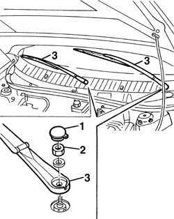

5050B34 windscreen wiper arm/s complete with blade - r+r
- Path
- Procedures > 50 AUXILIARY UNITS > 5050 SCREEN WASHERS AND HEADLAMP WASH/WIPE > 5050B windscreen wash/wipe > 5050B34 windscreen wiper arm/s complete with blade - r+r
- Kind
- repair procedure (removal / refitting; the operation number is the code)
- Applies to
- all engines; all production periods
- Interactive page
- https://sloeber94.github.io/elrnDB-a156/en/#/3238365
Applies to: all engines; all production periods
 Removing
Removing
 Refitting
Refitting1. Lift the bonnet lid and move the nut covering.
2. Unscrew the nut.
3. Remove the wiper arm.

Applies to: all engines; all production periods
Refitting
RemovingCheck that the wiper arm and the wiper blade are not damaged.
Reassemble the wiper arm fastening it with the nut.
Insert the nut covering.
Check the regular function of the windscreen wiper. Check the regular function of the windscreen wiper.
Topics that link to this page (12)
- 5010B08 ventilation system outside air purifying filter (antipollen) - r+r
- 5010B09 purifying filter (antipollen) filter element - replace
- 5010D72 air quality sensor - r r following circuit check
- 5050B38 windscreen wiper assembly - r+r or repair
- 5050B42 windscreen wiper motor - r+r
- 5050B52 front windscreen wiper motor intermittent function - r r
- 5050B54 front windscreen wiper electronic device - r r
- 5505A26 bonnet wiring - r r
- 7030B38 sliding roof drainage pipes (water drain) - check
- 7035A14 (Bonded type) windscreen GLASS - R.R. - Includes. cleaning edges of glass and housing in bodyshell
- 7035A18 windscreen glass r r including cleaning of housing
- 7210E22 R.R. WINDSCREEN BASE TRIM